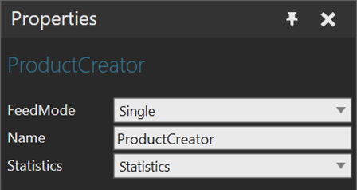

Product Creator allows you to create products that are defined in the Product Type Editor.

The ports of a Product Creator behavior are listed with the behavior in the Component Graph panel.
| Name | Description |
| FeedMode | There are four types of feed mode you can use in the creator. Single - Creates products of single type at given interval Batch – Creates products in batches based on the count and interval Table – Creates products as defined in an imported Excel file Distribution – Creates products of different types based on a distribution function. |
Name |
Name of the product creator |
Statistics |
Defines the Statistics behavior that records statistics generated by the creator. |